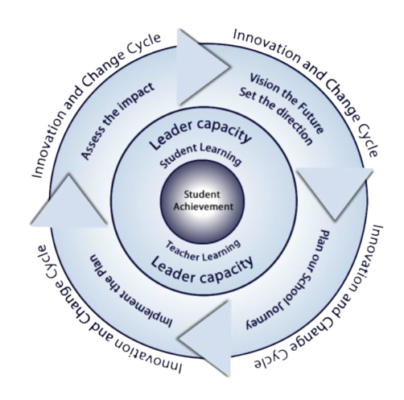

01
Workspace
Do the work.
A role-based dashboard that brings together the tools each audience uses every day — instructional planning, progress monitoring, coaching workflows, leadership routines. All connected, none siloed.
From student needs to adult learning to system growth.
Tools that fit the flow of teaching, coaching, and leading — every single day.
One system across ten roles, anchored by student needs and one shared structure.
Insight guiding improvement that compounds year after year.
Most districts juggle multiple tools, disconnected professional development, and uneven implementation. NorthStar brings it into one coherent system: clear expectations, role-aligned tools, personalized growth, and visibility at every level.
One coherent platform that aligns priorities across classrooms, schools, and the district.
Micro-credentials and job-embedded growth for every adult role — connected directly to student needs, surfaced from data collected.
Metrics that provide immediate insights into how well a system is performing, allowing for quick detection of issues and timely decision-making.
Every audience experiences the same coherent system, expressed through a dashboard built for their day-to-day work.
Digital self-assessments captured each learners needs.
Personal and role-based goals aligned to personal learning plan.
Personalized pathways and micro-credentials for adults.
Embedded tools and workflows that fit the daily flow.
Progress, artifacts, and reflections stored in e-portfolio.
Reflection and adjustment fuel continuous improvement.
Joey is the learning intelligence within NorthStar. Joey administers individualized assessments, analyzes daily learning artifacts, identifies patterns of strength and need, aligns evidence to standards, and organizes insights into clear instructional guidance.
For students, Joey is a daily learning guide. For educators, Joey is the assessment and analysis engine that protects teacher time and improves instructional precision — translating professional learning into practice with guiding support.
| For Students | A learning guide and daily companion. |
|---|---|
| For Families | A guide that helps their child stay organized and grow. |
| For Teachers | Assessment + analysis support that saves time and sharpens precision. |
| For Coaches | An insight generator that informs every coaching cycle. |
| For Leadership | System-level learning intelligence — insight without micromanagement. |
"Joey adapts the system to the learner — not the learner to the system."
The Unifying Principle
Make complexity feel elegant. Three repeating pillars appear on every dashboard — so the system stays coherent across ten roles.
Do the work.
A role-based dashboard that brings together the tools each audience uses every day — instructional planning, progress monitoring, coaching workflows, leadership routines. All connected, none siloed.
Grow the work.
Personalized learning for students and micro-credentials for adults — beginning with self-assessment, anchored in goals, delivered through job-embedded pathways, and demonstrated through real classroom evidence.
Guide the work.
A virtual systems coach embedded in every role's day — prompting next best actions, supporting routines, helping translate professional learning into practice with guiding support.
Every layer of the system supports the student at the top — and every role gets the same three pillars on their dashboard.
Pyramid concept © Beth Swenson 2020
Where every learner finds their North Star.
The North Star System is a ten-tier model built around student success. Every adult role plays a critical part in helping students achieve at high levels, with each layer supporting and strengthening the next. NorthStar Educational Tools connects and empowers the entire system.
Click on a tier to see who's involved, what they do, and how NorthStar supports them.
NorthStar surfaces system health in real time, while connecting daily practice to long-term student growth. District leaders see what's being implemented, where support is needed, and how growth is progressing — without adding pressure to schools or classrooms.

Outcomes that grow exponentially year after year.
NorthStarET is a coherent role-based learning and improvement system for every layer of a school. Get to know our story, our people, and where we're headed — with your support.
Veteran educators, coaches, and learning scientists building the tools they wished they had.
From a hand-drawn pyramid on a meeting-room whiteboard to a complete system.
Where we are today, what's next, and where we'll grow with your support.
Districts and schools that are seeing what coherence makes possible.
If every layer has the right tools, learning, and guidance, the system improves faster. Let's talk about a pilot in your district.